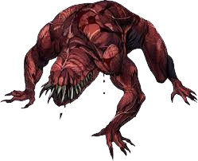
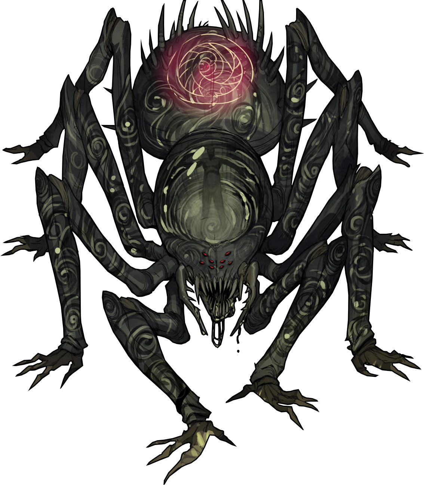
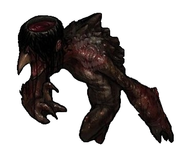
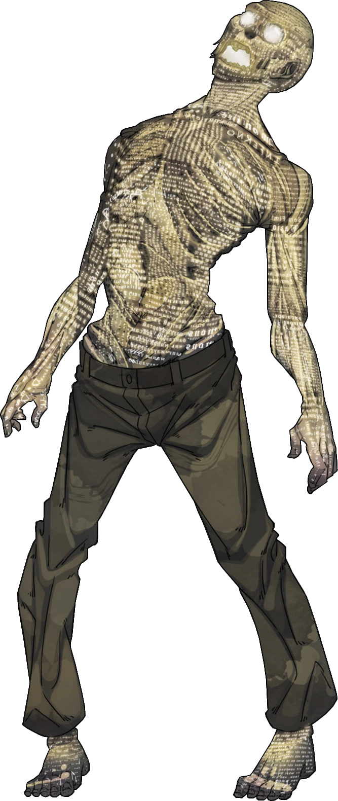
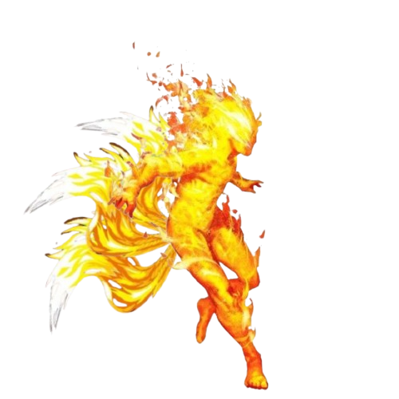

-
Zumbi de sangue VD20

- Sangue
Os Zumbis de Sangue são criaturas paranormais de Sangue, originando-se de cadáveres que foram mortos brutalmente e deixados abandonados em uma área com a Membrana enfraquecida.
-
Bestial VD100
- Sangue
Uma versão maior, mais forte e brutal de um zumbi de Sangue, bestiais costumam ser resultado de um cadáver que foi torturado brutalmente e sentiu dores indescritíveis antes de morrer, ou surgem do corpo de alguém com exposição paranorma elevada que foi devorado por completo pelo Sangue.
-
Aberração de carne VD40

- Sangue
Originalmente, a aberração de carne foi um experimento fracassado para juntar dois corpos em um só. A dor agoniante das duas cobaias que se mantiveram conscientes durante todo o processo tormentoso se transformou numa fúria desoladora alimentada pelo Sangue.
-
Aracnasita VD80
- Morte
- Medo
A distorção que a exposição paranormal pode causar a uma criatura na Realidade é imensurável e resultados assustadores podem fazer um pequeno aracnídeo se deformar a uma entidade parasitária enorme que se alimenta do tempo de vida humano para desenvolver-se em uma aberração gigantesca.
-
Esqueleto de lodo VD20

- Morte
Um cadáver consumido pela Morte, tomando uma forma completamente esquelética e acinzentada. O Lodo escorre por todos os orifícios de seu corpo, deixando um rastro que parece perseguir a criatura por onde ela passa.
-
Kappa VD30
- Morte
Uma criatura de Morte baseada na lenda do folclore japonês, Kappa é uma tartaruga com rosto de macaco com um buraco em cima da sua cabeça, ele é um ser selvagem que vive perto de rios e lagos na floresta costuma se esconder em cavernas. Caso se curve para ele, o Kappa ira se curvar de volta e derrubar o lodo, após um tempo se não encher a sua cabeça usando água ele acabará morrendo.
-
Existido VD20
- Conhecimento
Uma vez humano, hoje apenas uma casca buscando desesperadamente existir, o existido faz o que for possível para continuar sendo observado por alguém consciente. Um existido é alguém que foi longe demais, ultrapassou a barreira do Conhecimento e entendeu o Outro Lado por completo.
-
Kitsune VD120
- Conhecimento
- Energia
A kitsune é um ser baseado no folclore japonês, Kitsune é uma raposa flamejante que consegue alterar a sua forma para enganar e atrair pessoas para roubar suas energias vitais através de relações sexuais, já na sua forma verdadeira, ela é uma criatura com corpo humanoide com cabeça de raposa feita de chamas. As KKitsunes começam com uma cauda e ganham uma nova a cada 100 anos, ficando mais poderosas e inteligentes.
-
Anárquico VD20

- Energia
Quando uma pessoa morre em situações extremamente inoportunas e azaradas em um ambiente com a Membrana danificada, o seu corpo logo é consumido pela entidade de Energia, tendo todo o oxigênio e líquido dentro de seu cadáver substituído pela surrealidade da entidade.
-
Esfera de energia VD15

- Energia
Uma esfera feita de raios elétricos, ela vive atrás de energia elétrica para se alimentar para ficarem maiores e mais forte, os raios possuem uma cor azulada, mas ao perceber uma ameaça seus raios ficam roxos e movendo-se de formas mais agitadas e erráticas. (Rituais de energia fortalecem elas)